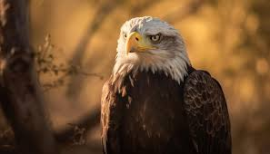
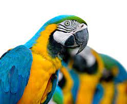

Aves
Aves são uma classe de seres vivos vertebrados caracterizada pela presença de penas, um bico sem dentes, oviparidade de casca rígida e um esqueleto pneumático resistente e leve.
As aves estão presentes em todas as regiões do mundo e variam significativamente de tamanho, desde os 5 cm do colibri até aos 2,75 m da avestruz. São a classe de tetrápodes com o maior número de espécies vivas, aproximadamente dez mil.
As aves apresentam asas, que são mais ou menos desenvolvidas dependendo da espécie. Os únicos grupos conhecidos sem asas são as moas e as aves-elefante, ambos extintos.As asas, que evoluíram a partir dos membros anteriores, oferecem às aves a capacidade de voar, embora a especiação tenha produzido aves não voadoras como as avestruzes, os pinguins e diversas aves endémicas insulares.
Os sistemas digestivo e respiratório das aves estão adaptados ao voo. Algumas espécies de aves que habitam em ecossistemas aquáticos, como os pinguins e a família dos patos, desenvolveram.
| Fotografia | Espécie | O que é |
|---|---|---|

|
Coruja | Coruja é a ave soberana da noite. Para muitos povos a coruja significa mistério, inteligência, sabedoria e conhecimento. Ela tem a capacidade de enxergar através da escuridão, conseguindo ver o que os outros não veem. |
|  | Águia | A águia é o nome comum dado algumas aves de rapina da família Accipitridae, geralmente de grande porte, carnívoras, de grande acuidade visual. O nome é atribuído a animais pertencentes a gêneros diversos e não corresponde a nenhum clade taxonômico. Por vezes, dentro de um mesmo gênero ocorrem espécies conhecidas popularmente por gavião ou búteo. |
|  | Arara azul | A arara-azul, também chamada arara-azul-grande, é uma espécie de ave, encontrada no Brasil, que se caracteriza por ser a maior entre os psitacídeos (família Psittacidae), chegando a atingir mais de um metro de comprimento, medindo-se da ponta do bico à ponta da cauda. Essa espécie habita diferentes formações vegetais, sendo encontrada em formações savânicas e até em ambientes de floresta no Brasil, Paraguai e Bolívia. As maiores populações dessa espécie de arara são encontradas no Pantanal. |